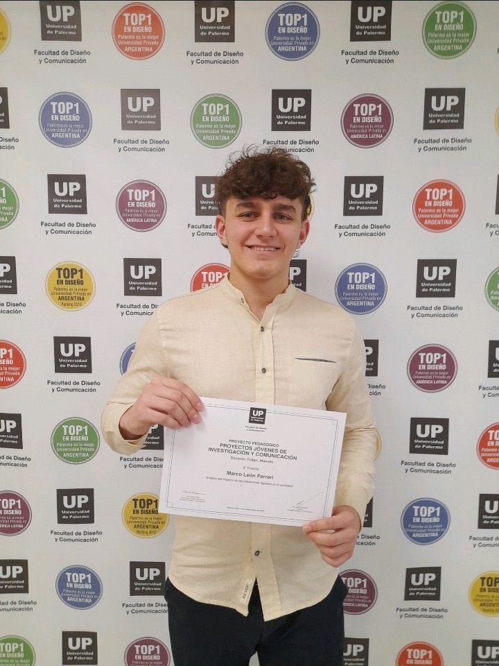

Licenciatura en Comunicación Digital
Universidad de Palermo
ago. 2022 - ago. 2026
Introducción al Periodismo
ETER Escuela de comunicación
ago. 2023
Programa de Capacitación en Podcasting
Spotify
ago. 2022
First Certificate of English (B2)
Cambridge University
sep. 2022
Premios y reconocimientos
Proyectos Jóvenes en Investigación
Asociado con Universidad de Palermo
Fui galardonado con el tercer premio por mi proyecto de investigación "Impacto de las plataformas digitales en la sociedad". La misma fue publicada en el blog de la materia en donde se puede leer.
Proyectos Jóvenes en Comunicación
Asociado con Universidad de Palermo
Fui galardonado con el primer premio por mi proyecto integrador en el marco de la materia "Comunicación Oral y Escrita"

Contacto


+54 9 11 5929-8940